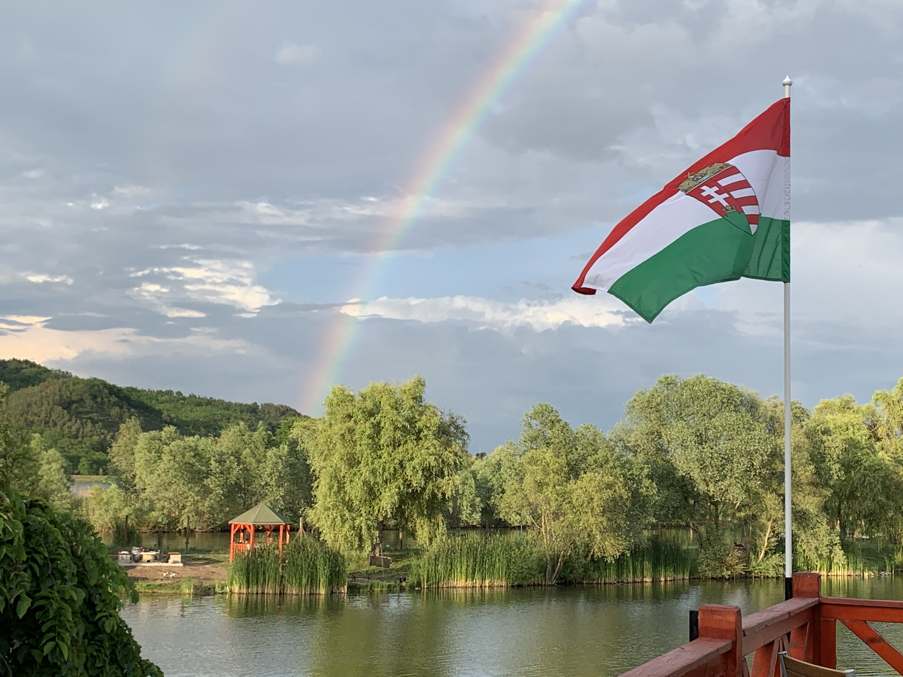

Bővítések, fejlesztések
2024:
- Déli versenypálya lekövezése
- Csónakkikötő lekövezése, tereprendezése
- Zsilipek (tavak közötti vízátengedő rendzerek) lecserélése
2024 után:
- Halőrház teljes újjáépítése turisztikai központtá
- Tanösvény létrehozása
- Kilátó felújítása
- Futópálya létrehozása
